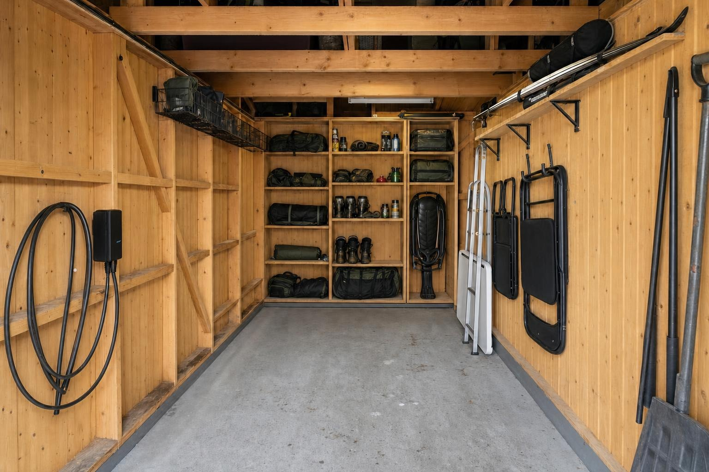

Use the walls. Keep room to move.
Photorealistic concept · without the car
B · 50 cm · balanced
Created from this plan’s 3D entrance view and your garage photographs. This image shows the default settings; changes to the sliders appear in the 3D model. AI details can differ from the measured plan.

Select a plan above to change the image. A · 40 cm · B · 50 cm · C · 60 cm · D · 80 cm
Depth buys storage, and takes floor space.
The same walls, loft and mixed shelf openings are used in every option. Rear shelf surface includes the upper clearance study when enabled. It excludes side walls and the loft, and does not measure storage volume or loading.
| Plan | Rear lower / upper depth | Rear shelf surface | Gap to parked car | Tradeoff |
|---|
At 60 and 80 cm depth, the rear unit also covers one more left-wall bay in this study: 7 flush inserts + 4 high baskets, compared with 9 + 5 at 40 and 50 cm.
Storage review · observed belongings & existing space
Keep flexible capacity for changing belongings: smaller shelves, some larger openings, one rattkjelke slot, accessible gardintrapp, and seasonal storage on the loft. Backpacks may lie down, stand or hang; the current hanging arrangement is optional. No storage-box inventory is assumed.
| Things to accommodate | Evidence | Storage approach |
|---|
What to reuse / add in this plan
| Zone | Allocation | Reuse / specification |
|---|